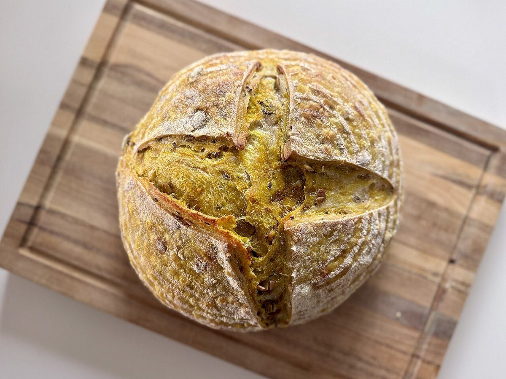

15:00 / 午後の位置
店のこと
お店について確認できているのは、所在地・電話番号・Instagramのアカウントです。
このページの「想像してみる」部分は、制作側が想像して書いたものです。お店の実際の様子・考え・商品とは関係がありません。
確認できていること
- 店名は「SUNNYDAY(サニーデイ)」、業種はパン屋
- 所在地は宮崎県宮崎市曽師町中原甲251-1(〒880-0875)
- 電話番号は080-8504-5278
- Instagramは @sunnyday2024.9
- 営業時間・定休日・メニュー・価格・ご予約・駐車場は準備中

想像してみる
「SUNNYDAY」という名前から
由来は分かりません。制作側は、明るい一日のはじまりを連想しました。ひまわりが太陽の方を向くように、手に取った人が少し明るい気持ちになるお店かもしれない、と想像しています(実際のお店の姿ではありません)。

